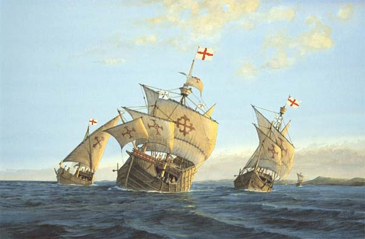
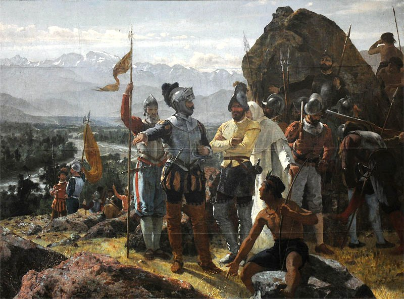
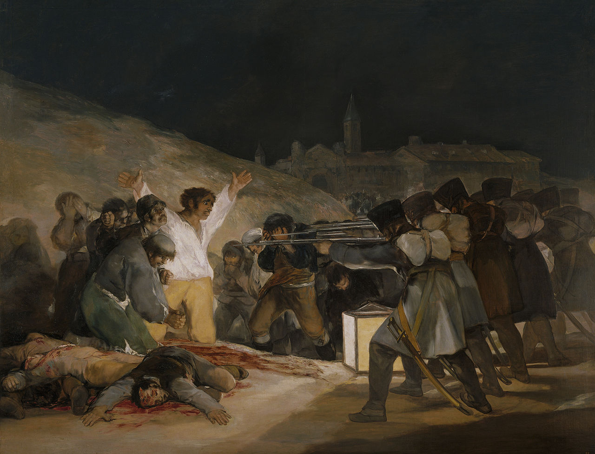

Durante los años de la zona que está España fue controlado por muchos grupos diferentes. Pasó seis siglos bajo el dominio romano. España estaba entonces bajo control árabe durante ocho siglos. España formó entonces en su propio país y bajo el reinado de Fernando expulsó a los gobernantes árabes. Ellos fueron los que enviaron Cristóbal Colón en su viaje durante el cual se descubrió América de nuevo. Este fue también el comienzo de la Inquisición española.
Después de este período España llegó a ser muy poderoso y se dispuso a colonizar el nuevo mundo. España conquistó a los Incas, Aztecas y Mayas y reclamó sus tierras en las Américas. España tenía la mejor marina del mundo y una de infantería temido.
Alrededor del siglo 17 España comenzó a declinar en el poder. Ellos comenzaron a perder territorio de ultramar y estaban teniendo problemas en el país también. España fue derrotada por Napoleón y su hermano se colocó en el trono. El pueblo español se sublevaron y se llevaron a la reivindicación de España, de Francia. Más rebeliones siguieron y finalmente España ya no era una monarquía.
En tiempos más modernos España no está cerca el poder lo era antes. Ahora es parte de la Unión Europea y al igual que muchos países en la actualidad está teniendo una crisis financiera. Una de sus principales aspectos económicos ahora es el turismo.